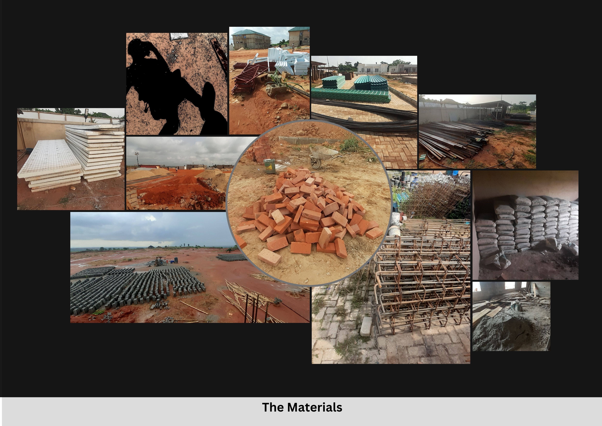
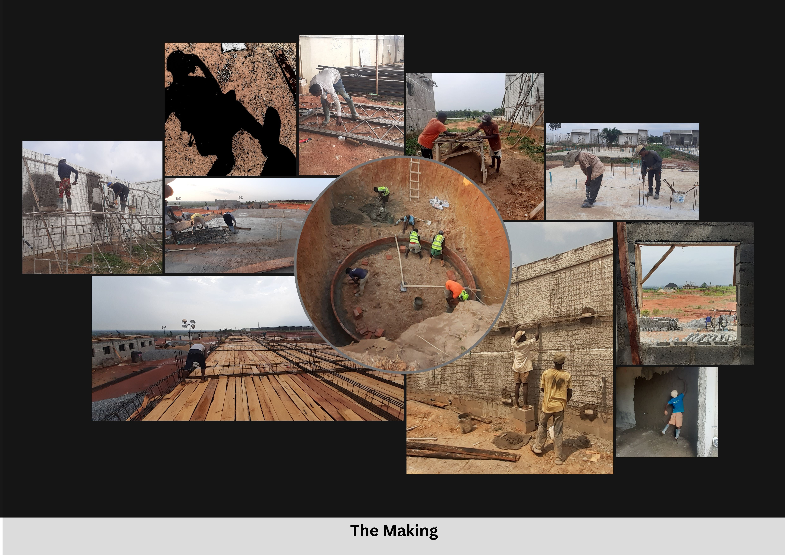
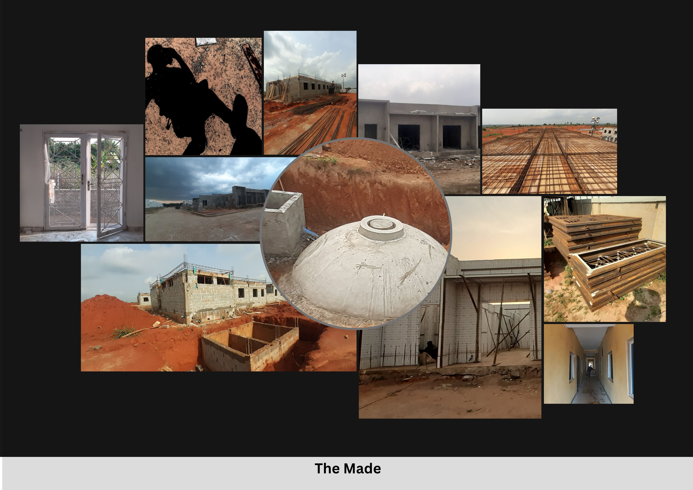

Abstract
This field note treats construction labour as a form of place-making, meaning the process through which the physical and spatial qualities of a place are determined in practice by workers whose decisions leave no official record. Drawing on four months of site observation at Mowe Golf Town, a residential development in Ogun State, Nigeria, it pairs fieldnotes and reported conversation with three photographic collages of thirty-one images, organised around materials, making, and made. Photography alone cannot hold the sensory, social, and economic texture of construction work; paired with fieldnotes, it can gesture toward it. The note also specifies to whom this labour is invisible.
Keywords
Introduction: Who Makes a Place
Place is widely understood as materially and socially produced, through dwelling, movement, memory, representation, and relations (Tuan 1977; Massey 2005; Pierce, Martin and Murphy 2011). Within urban studies, a narrower strategic literature asks who directs or contests a place's meaning. Wu (2000) examines cities repositioned within global circuits of capital and image, Zitcer (2020) traces creative placemaking as a policy instrument deployed to generate economic value, and Kass and Dunlap (2025) recover place-making as political practice exercised against dispossession. These accounts largely concern meaning.
This note asks who determines a place's physical and spatial qualities in practice. Labour geography has shown workers to be active makers of economic landscapes (Herod 1997), yet the everyday decisions of construction workers on site remain little examined. I use labour place-making to name the process through which the physical and spatial qualities of a place are determined in practice by workers whose decisions leave no official record. What distinguishes it from construction in general is authorship. While places acquire memory and significance without being built, built form is best understood as one dimension of a place, and one whose authorship is routinely erased. The dimensions of a room, the strength of a wall, and the acceptability of a material are consequential choices made in real time, and they disappear into the finished building. Thus, the masons, iron benders, and labourers at Mowe Golf Town hold no strategic control over what the estate will signify.
Site, Context, and Method
Mowe Golf Town is a gated residential development along the Lagos–Ibadan expressway corridor in Ogun State. The corridor has experienced sustained peri-urban expansion, driven by Lagos’s population pressure, land scarcity, and demand for housing outside the city’s administrative boundaries (Lawanson 2012; Tajudeen 2025). Ogun State has absorbed much of this growth, with gated estates targeting middle- and upper-income buyers who work in Lagos or seek residence outside its congestion.
Mowe Golf Town represents this pattern. The estate, like others along the corridor, is owned by a group of private developers who sells built units to individual buyers. Employment arrangements are predominantly informal as workers are engaged on a task or daily basis, often through subcontractors, without written contracts. Invisibility here is rooted in the informality of employment. Workers who are not formally employed are also not formally recorded, and their decisions are correspondingly absent from the documentary traces that buildings generate. Approximately twenty workers were employed on site, including masons, carpenters, iron benders, general labourers, and one foreman. Fieldwork concentrated on detached and semi-detached units at shell-and-core stage, across four months, while I worked on a contract basis as construction supervisor, specifically for quality control.
Site access came with a working role and no artistic brief, so the images are distinct from both construction-management documentation and autonomous artistic practice. Photography was secondary to operational duties and could not be staged with any deliberation. Thirty-one images were taken without interrupting work and assembled into three collages, which serve here as visual documentation. Fieldnotes and informal conversations with workers, held as ordinary talk during shared labour, were documented with identifying detail removed. A supervisor's presence inevitably shaped what workers said and did in front of me.
Walby and Davis (2022) pair photography with oral testimony to approach industrial harm that no image registers directly; Erfani (2021) hands the camera to residents. Here the camera stayed in my hands throughout, which carries its own asymmetry. Both precedents suggest that an image alone under-determines meaning, and that testimony anchors it.
The Materials

Reading the collage
The Materials is organised around accumulation. Blocks fill the lower left in tight rows, their regularity signalling labour already performed. A close image of loose brick fills the centre, chosen over a wider shot because proximity removes scale and slows the act of looking. A torn cement bag at the edge breaks the composed geometry, registering disruption in supply chains that look orderly in photographs.
Fieldnote
12 December 2025, morning visit. The delivery truck could not clear the flooded section of the access road. The driver and foreman argued for close to thirty minutes about who would bear the cost of an alternative route. The blocks arrived two hours late, after they reached an agreement.
This supply-chain negotiation determined the materials cost of a section of wall. It was conducted in Yoruba, price adjusted by an amount neither party named aloud, left no written trace, and is not visible in any photograph.
The rebar bundles had lain exposed for six weeks. During a rest period, an iron bender assessed the surface rust on several lengths and judged them acceptable for non-load-bearing use in a makeshift store. That determination was made without instrument or written specification. It drew entirely on accumulated experience of comparable judgements on comparable sites and left no record beyond its consequence.
The Making

Reading the collage
The Making is composed around the body mid-motion, with a trowel mid-stroke and hands mid-pour. Images of rest were excluded because stillness photographs as posed. The image of workers inside the excavation is central because the pit's depth communicates a relationship to the earth the others do not.
Fieldnotes and testimony
15 January 2026, afternoon. One of the newly contracted iron benders had been tying rebar since seven to meet the day's target. By two o'clock, after a break, he had shifted his weight onto his left leg. When he completed a section of the floor, he readjusted his stance and continued.
Ingold (2011) describes making as thinking through doing, intelligence distributed across body, tool, and material. The iron bender's postural shift is a minor instance. The several tying actions since the start of his shift appear in no construction record, and they register in photographs only if the photographer already knows what to look for. They also mark the bodily limits against which productivity targets are set.
31 January 2026, mid-morning. “He was moving too slow and we were falling behind. So I pulled him off there and put him on the interior. I gave the exterior to another guy who could handle the heat. We can’t wait. Work has to move,” the foreman replied when I asked why he had reassigned the labourer previously working on the sun-facing exterior walls.
The entry shows labour discipline operating through allocation. The foreman reads pace as productivity and treats heat tolerance as an attribute of individual workers. The cause of the slower pace is not established. Heat stress, fatigue, skill, illness, or ordinary variation are all plausible, and the worker's own account was not recorded. The observation does support the view that sun-facing work was allocated according to the foreman's judgement of who could endure it, which shaped how quickly the walls rose. The reassignment left no record and was legible only across repeated days on site.
The Made

Reading the collage
The Made contains no workers, a deliberate choice; images with workers were set aside so that the structures could show that what stands here, though unfinished, already carries spatial qualities that will shape how the place is inhabited. A finished blockwork wall beside an unfinished rebar grid holds two states of completion in one frame, resisting the idea that finishing proceeds evenly.
Fieldnotes and testimony
17 February 2026, late afternoon. “Just leaving my mark. Years from now, when this building is still standing, my hand will still be inside it,” said a young labourer when I asked why he was pressing his palm into freshly poured concrete in the corridor floor. He smoothed the handprint over a few minutes later.
Crawford (1999) observes that construction workers in many contexts build homes for others that they cannot themselves afford. Mowe Golf Town is marketed to buyers who will have no contact with, and mostly no awareness of, those who built it. The handprint lasted minutes, and its maker had moved to another site before the unit reached finishing stage. The collage includes the handprint but cannot include the conversation.
6 March 2026, rest break. Two masons, talking to each other, were discussing a house one of them intended to build for himself. He described the plot, the size, the rooms. His colleague asked when. He said soon, when their job on the site was completed.
This exchange between workers was recorded afterwards from memory. Lefebvre (2004) describes everyday life as organised around repetition and rupture. Here it appears as a plan held alongside a deferral, an aspiration absorbed into the structure of daily work. The made structures show no trace of it.
Discussion: Photography, Collage, and the Invisibility of Labour
Berger and Mohr (1982) observed that every photograph severs the moment it records from its before and after. In these collages, the blocks appear without the argument that preceded their delivery, the iron bender without accumulating fatigue, and the corridor floor without the handprint. Assembling images into panels adds an editorial logic of centring and exclusion, which the collages make visible by naming it. Fieldnotes and reported conversations add time. The iron bender's posture is legible across a month of visits, and the foreman's judgement of pace makes sense only because typical rhythms were known.
Labour is invisible in several distinct ways. It is absent from developers' and contractors' records, which register cost and output but not judgements such as the rust assessment. It is hidden from buyers and future residents, since tiling and backfilling conceal how the building was made. It is also overlooked in scholarship, where place-making literatures attend to meaning more than making.
Conclusion
Mowe Golf Town will in time be a finished estate, sold and photographed for marketing material that shows none of what this note has documented. The workers who built it will have moved to other sites, carrying knowledge, fatigue, and plans that no record of this place will hold.
Photographic collage combined with fieldnotes and reported conversation makes the gap between image and experience legible enough to examine, even though it cannot close that gap. Calling construction labour a form of place-making insists that the people who build a place are part of what it is, and that their work deserves a method adequate to its complexity.
References
Berger, J. and Mohr, J. (1982) Another Way of Telling. London: Writers and Readers.
Crawford, M. (1999) 'Introduction', in J. Chase, M. Crawford and J. Kaliski (eds.) Everyday Urbanism. New York: Monacelli Press, pp. 8-15.
Erfani, G. (2021) 'Visualising urban redevelopment: Photovoice as a narrative research method for investigating redevelopment processes and outcomes', Geoforum, 126, pp. 80-90.
Herod, A. (1997) 'From a geography of labor to a labor geography', Antipode, 29(1), pp. 1-31.
Ingold, T. (2011) Being Alive: Essays on Movement, Knowledge and Description. London: Routledge.
Kass, H. and Dunlap, A. (2025) 'Rioting as legitimate abolitionist practice: Counterinsurgency versus radical place-making in the George Floyd rebellion', Dialogues in Human Geography, advance online publication.
Lawanson, T (2012) 'An investigation of rural urban linkages of the Lagos megacity, Nigeria', Journal of Construction Project Management and Innovation, 2(2), pp. 464-481.
Lefebvre, H. (2004) Rhythmanalysis: Space, Time and Everyday Life. Translated by S. Elden and G. Moore. London: Continuum.
Massey, D. (2005) For Space. London: Sage.
Pierce, J., Martin, D.G. and Murphy, J.T. (2011) 'Relational place-making: The networked politics of place', Transactions of the Institute of British Geographers, 36(1), pp. 54-70.
Tajudeen, R. (2025) 'Peri-Urban housing dynamics in Africa’s megacity fringe: Evaluating the quality of residential elements along the Lagos-Ibadan corridor', International Research Journal of Multidisciplinary Scope (IRJMS), 6(4), pp. 547-560.
Tuan, Y.-F. (1977) Space and Place: The Perspective of Experience. Minneapolis: University of Minnesota Press.
Walby, K. and Davis, B. (2022) 'Tailings and tracings: Using art and social science to explore the limits of visual methods at mining and industrial ruins', Visual Communication, 23(2), pp. 265-288.
Wu, F. (2000) 'The global and local dimensions of place-making: Remaking Shanghai as a world city', Urban Studies, 37(8), pp. 1359-1377.
Zitcer, A. (2020) 'Making up creative placemaking', Journal of Planning Education and Research, 40(3), pp. 278-288.
Author Bio
Dele Oye is a graduate architect and member of the Nigeria Institute of Architects, based in Ogun State, Nigeria. He holds a BSc in Architecture from the University of Benin and has worked as a site engineer and project supervisor on residential construction projects. He is an architectural design instructor with interests in photo-documentary practice, construction knowledge, and the politics of the built environment. He is a member of the Green Building Council Nigeria.
Recommended Citation
Oye, D. (2026) ‘Invisible Hands: Construction Labour and the Material Production of Place in Ogun State, Nigeria’, Everyday Life: International Journal of Public Culture, Art and Design, 1(1), pp. 1–9.
Article URL: https://articles.everydaylifejournal.uk/articles/field-notes/invisible-hands/
Copyright
© 2026 The Author(s). Published by Everyday Life: International Journal of Public Culture, Art and Design. This is an open-access article distributed under the terms of the Creative Commons Attribution-NonCommercial 4.0 International Licence (CC BY-NC 4.0), which permits non-commercial use, distribution and reproduction in any medium, provided the original work is properly cited. Everyday Life is an independent open-access journal with no submission or publication fees.